Orbit Kit
Ready-made components built on Orbit: gauges, charts, knobs, menus, pickers, clocks, timers, spinners and status rings, one tag each.
Each component writes the Orbit structure you would write by hand (a .bigbang, a .gravity-spot, rings, arcs and satellites) into the page, so it scales with its box, takes your CSS and shows up as plain elements in the inspector. When you need something the kit does not do, open the inspector and start from what it built.
Install
The kit needs Orbit 2 on the page: its stylesheet and its script, which draws the arcs. With npm:
npm install @zumer/orbit @zumer/orbit-kitimport '@zumer/orbit/style'
import '@zumer/orbit'
import '@zumer/orbit-kit'Or in a plain page:
<link rel="stylesheet" href="https://unpkg.com/@zumer/orbit/dist/orbit.min.css">
<script defer src="https://unpkg.com/@zumer/orbit/dist/orbit.min.js"></script>
<script type="module" src="https://unpkg.com/@zumer/orbit-kit/src/orbit-kit.js"></script>The entry registers every component. To load only some, import their files: import '@zumer/orbit-kit/o-gauge.js'. Orbit 2 is a peer dependency; the kit does not work with Orbit 1.x.
Components
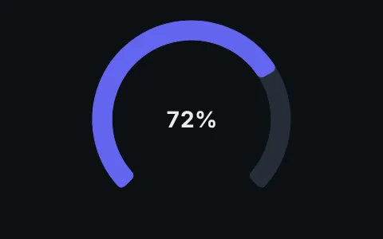
GaugeOne value on an arc.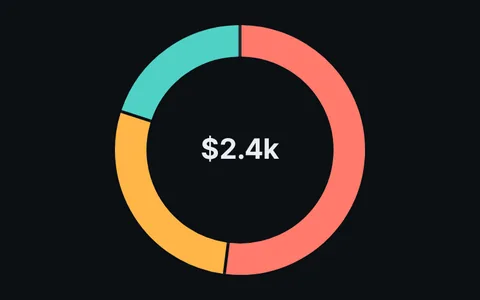
DonutA donut chart from an array.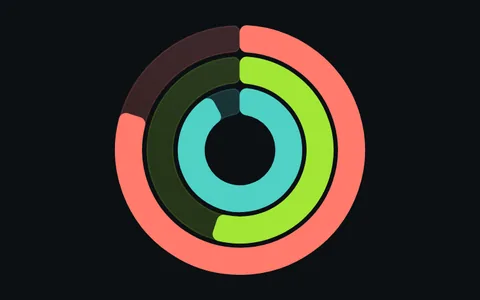
RingsConcentric activity rings.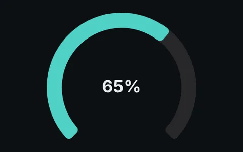
KnobA rotary control.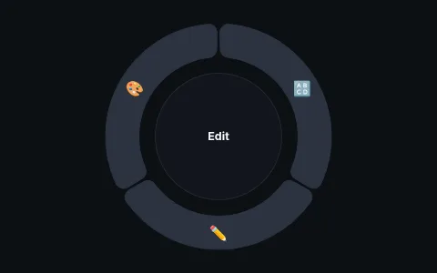
MenuA radial menu, flat or nested.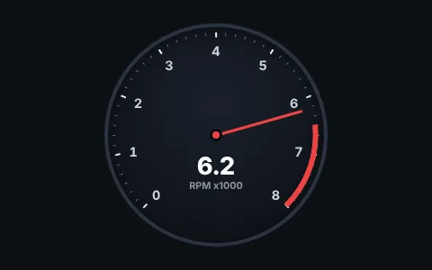
InstrumentNeedle gauges with presets.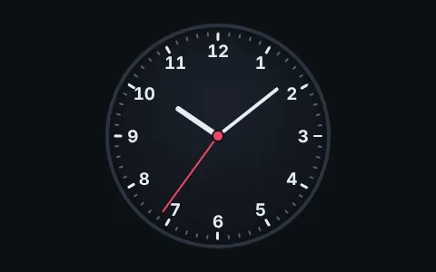
ClockClocks and watch faces.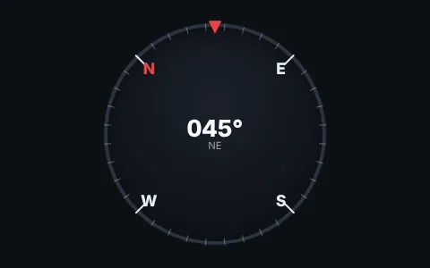
CompassA heading indicator.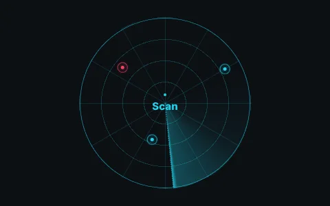
RadarA scope with a sweep and blips.- TimerA countdown ring with controls.
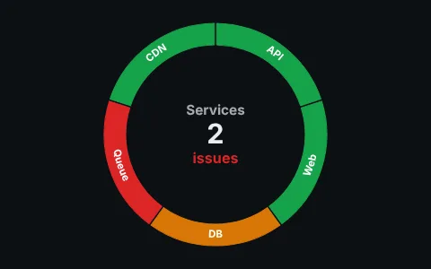
StatusHealth of many things, in layers.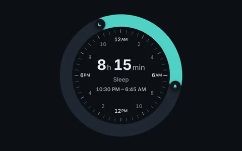
RangeTwo handles on one ring: a span of values or hours.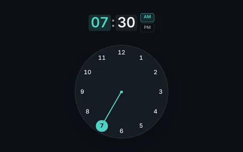
Time pickerPick a time by turning a clock.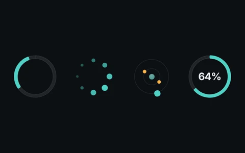
SpinnerLoading rings, dots and orbits.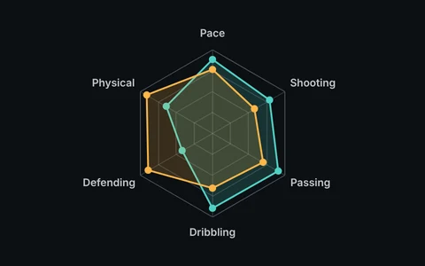
Radar chartValues across axes, on a web.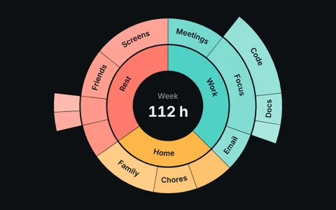
SunburstA tree as nested rings, with zoom.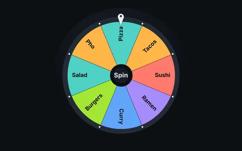
WheelA prize wheel that spins to a result.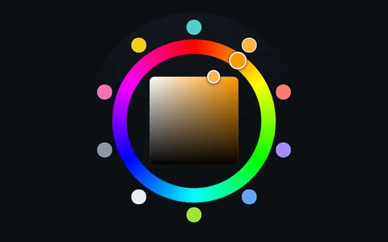
Color wheelA hue ring color picker.
What they share
Once you know one component, you know most of the others.
| Attribute | What it does |
|---|---|
size | Width of the widget, as any CSS length. Most are square; 100% follows the container as it resizes. |
thickness | Band thickness in lanes, Orbit's unit: a lane is a twelfth of the radius. |
fill, track | Value and track colors of the band components: gauge, knob and timer. |
accent | The highlight of the dial components: instrument, clock, compass and menu. |
label, unit | The text in the middle. |
range, from | Arc span and start angle in degrees. Partial ranges center their gap at the bottom. |
glow | A glow in the indicator color; glow="12" sets the blur in px. |
data, items, targets, zones | Lists, as JSON in the attribute. |
min, max, step | The range of a value, read like <input type="range">. |
format, locale | How numbers are written: percent, currency, units, compact. |
theme | dark, light or glass, or an ok-theme-* class on a container. |
name | The knob and the menu are form controls. |
The last four work the same everywhere; Shared options has the details and live examples.
Change an attribute and the component updates. Values only move what moves; a new structure, like a different number of segments, rebuilds the inside.
Colors live in custom properties that inherit, so one rule themes a whole panel:
.dashboard {
--ok-fill: var(--accent); /* value arcs */
--ok-track: color-mix(in oklab, var(--accent) 22%, #0c0f13); /* tracks */
--ok-accent: #f97316; /* needles, hands, highlights */
--ok-text: #e2e8f0; /* readouts */
--ok-face: #0b1220; /* dials */
}Each page lists the properties of its component. Attributes set the same properties on the element itself, so an attribute wins over a rule on a parent.
Text inside a component scales with it: the base font size is a share of the widget (--ok-font-size), and readouts are sized in em. A 120px gauge and a 400px gauge look the same, only bigger.
Every component has a role and a name that follow its value: gauges and instruments are meters, the knob is a slider, the menu is a menu, the timer is a timer. Write your own aria-label and the component keeps it. Decorative motion stops when the system asks for reduced motion.
Coming from 0.x
Tag names and attributes from 0.x still work. What changed is underneath:
- The kit runs on Orbit 2 and no longer works with 1.x.
- Components are sized by their universe. The outer band touches the edge of the widget, so a gauge looks a little bigger in the same
size. thicknesssets band thickness.orbitandstroke-widthstill work as before.gapis now a share of the widget width, the same in the donut, the menu and the status ring.- Colors are custom properties you can set from CSS, and text scales with the widget.
- New:
<o-timer>and<o-status>,minon the gauge,accenton the compass and the radar. <o-meter>still ships;<o-instrument>does all it does and more.